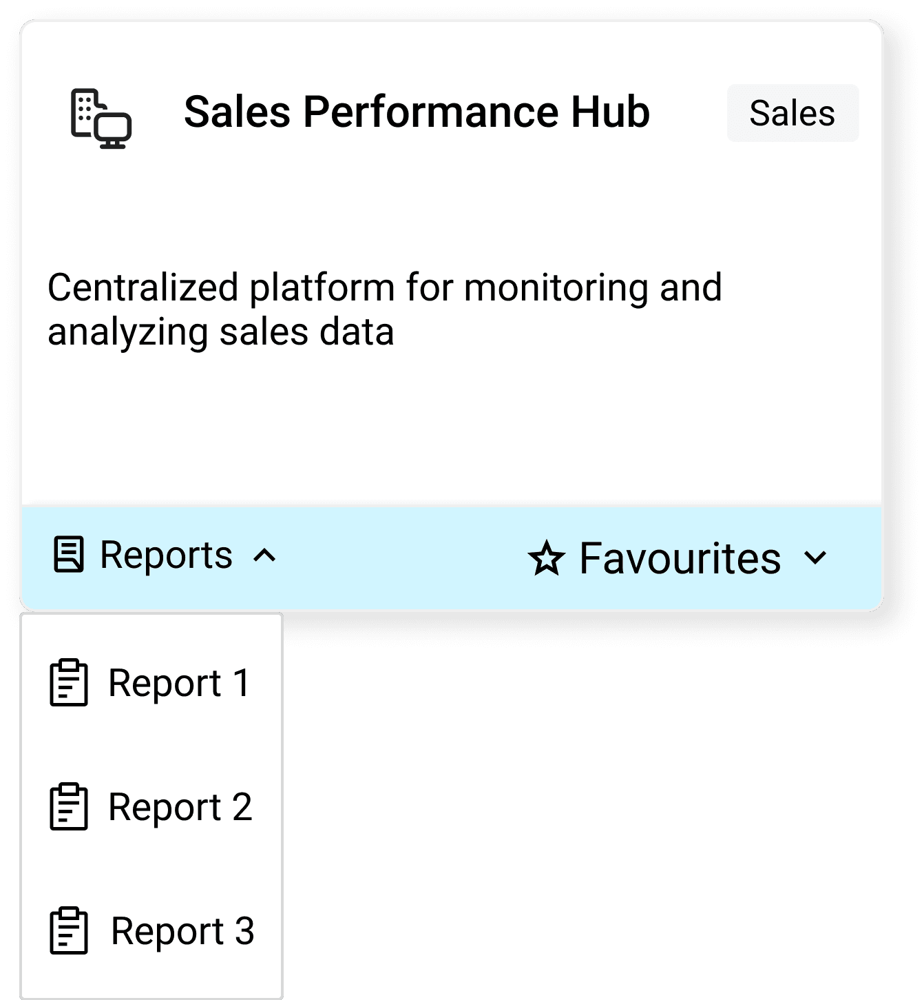
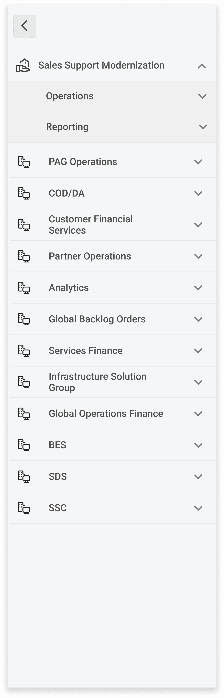

Click fatigue
Employees needed quick access to a small set of reports they used every day. The platform forced them through three to five clicks to reach each one, every time. Familiarity didn't help because the structure itself was the problem.
The shortest path to a report shouldn't be a memorized route
Reps knew exactly where their reports lived but still walked the same nested menus every day. The structure weighted every report equally and surfaced nothing by actual use.
"The number of clicks needed to reach the report slows me down. It disrupts my workflow and feels inefficient, even though I'm familiar with the site." Matt, Data Engineer, Dell
A three-pronged approach
Favorites on the home screen
Users pin their everyday reports, and the home tiles surface them as one-click destinations, bypassing the menu entirely.

Reports dropdown inside each tile
Each tile gained a Reports dropdown, so users jump straight to a specific report from the home screen instead of opening the full Reports page first.

Universal side navigation
A persistent side rail, compact by default and expandable to full categories, moves users to any section from any page with no breadcrumb backtracking.

